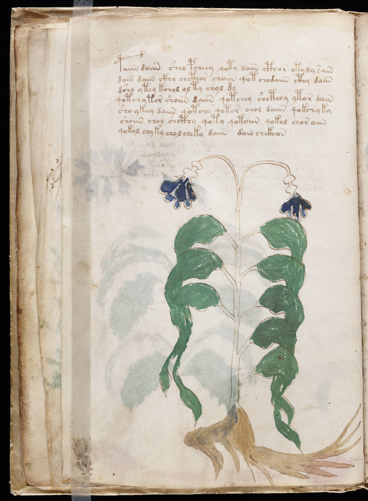

f10v
1paiin daiin sheo pcheey qoty daiin cthor otydy sain2dain daiin ckhy chcthor choiin qot chodaiin cthy daiin3dsho ytey kchol olty chol dy4qotchytor shoiin daiin qotchey shcthey ytor dain5sho ykeey daiin qotchy qotor chol daiin qokchyky6shoiin chor shcthy qoty qotoiin qokol choraiin7qokol chyky chol cheky daiin dain chckhan
